LootGrid ProByteLuraSpatial grid inventory for Unity
Gallery
LootGrid Pro in the Loot Yard demo — every frame is the real demo, nothing staged.
The fifteen frames below walk through the package: the grid, drag
and drop, rotation, the equipment doll, sorting, weight refusal,
looting, item data, the database, Verify Install, saving, the API,
and the product at a glance. Each frame is captioned with what it
shows; the Loot Yard demo guide tours
the same features step by step.
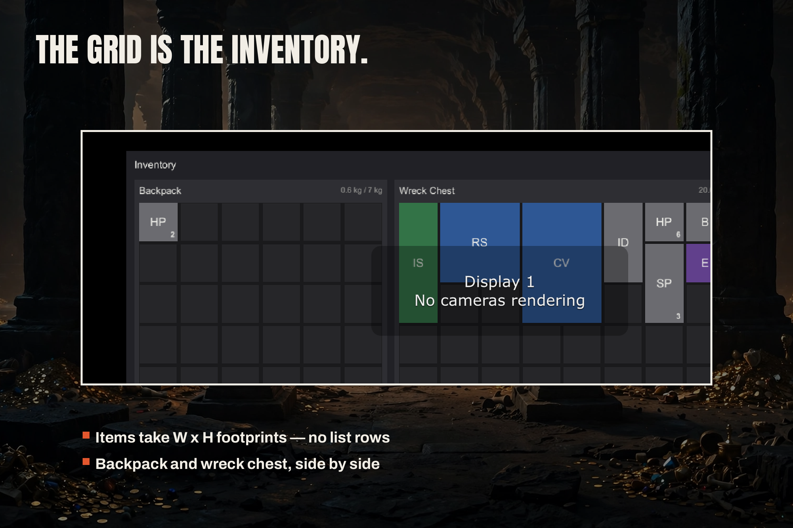
The grid: a backpack beside the Wreck Chest, items placed by width and height footprint.
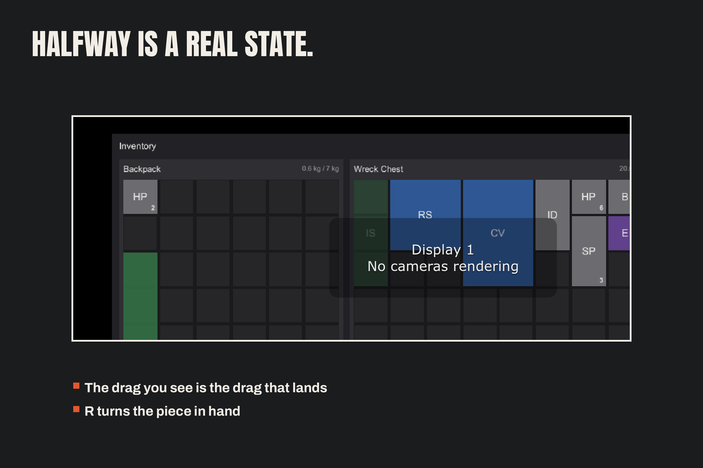
The drag ghost: the item preview follows the cursor while dragging.
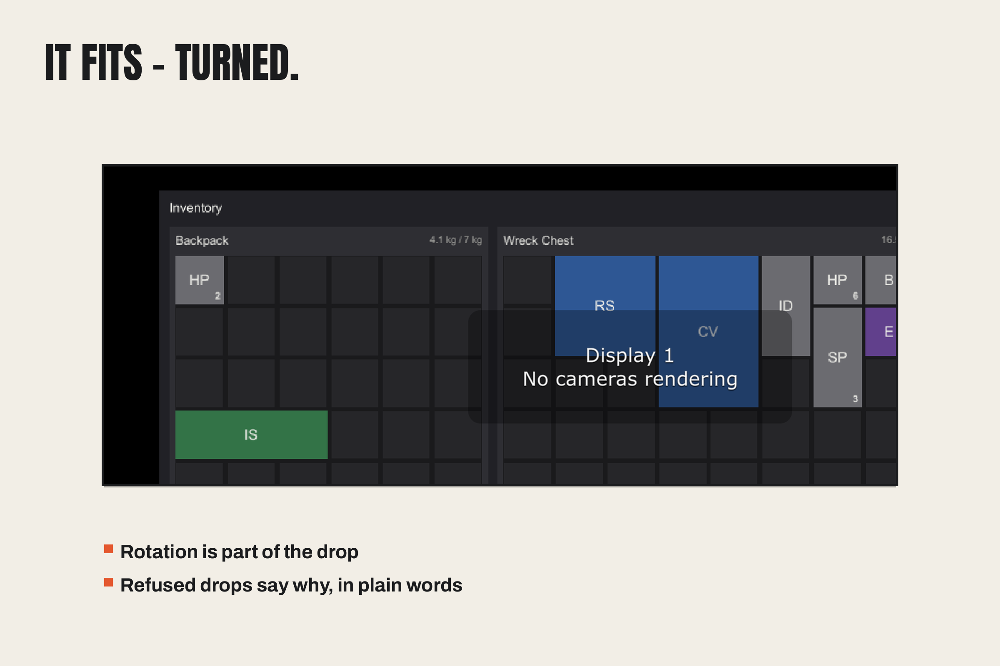
Rotated fit: the Iron Sword placed sideways, its 1×3 footprint rotated to fit.
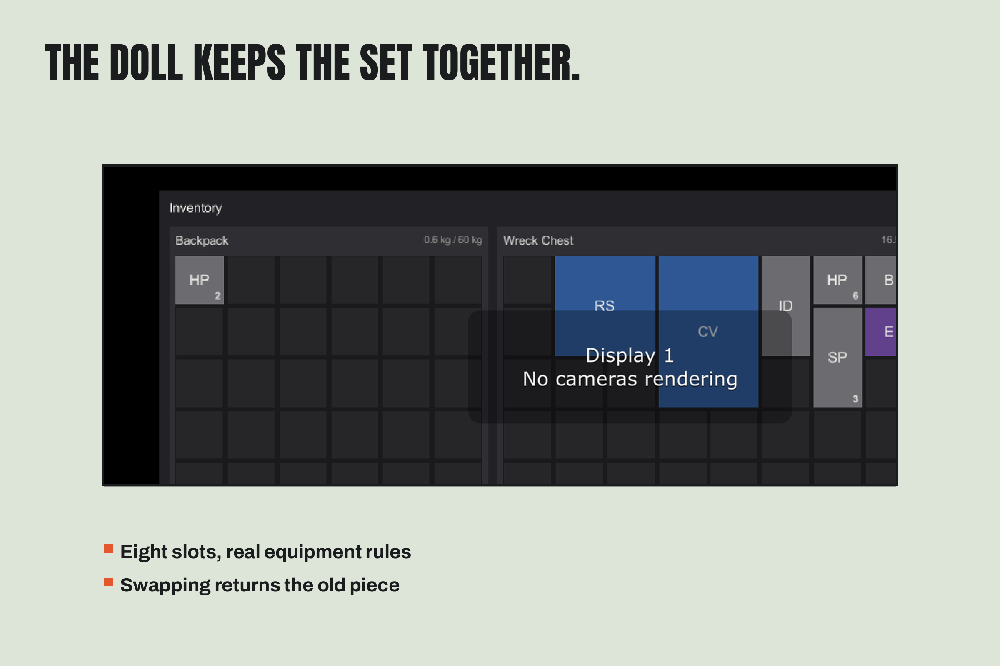
The equipment doll: the iron dagger equipped in the main-hand slot.
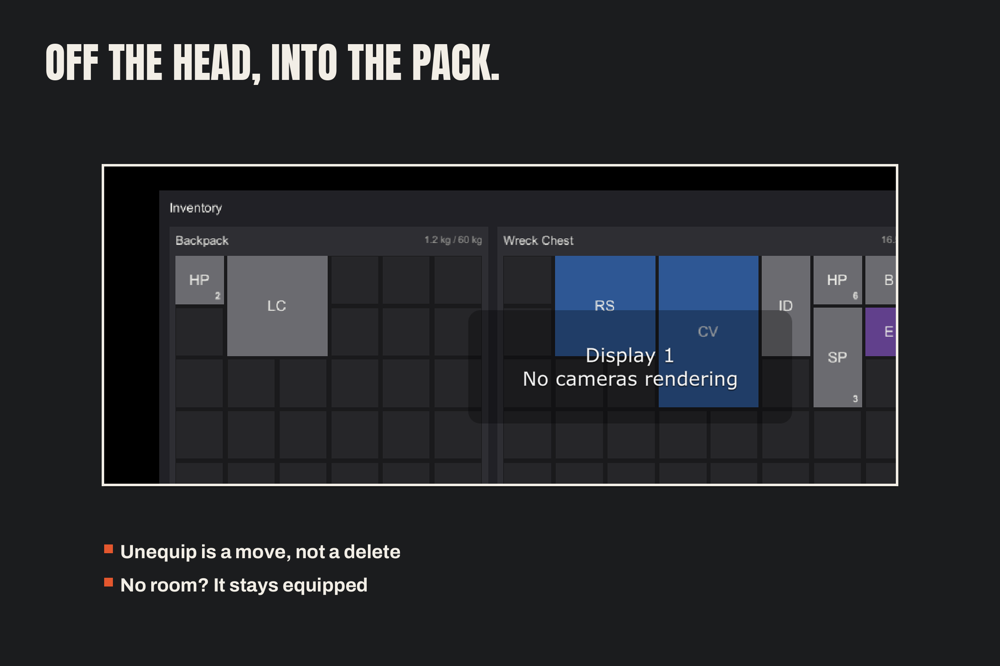
Unequip: the leather cap leaves the doll and returns to the backpack.
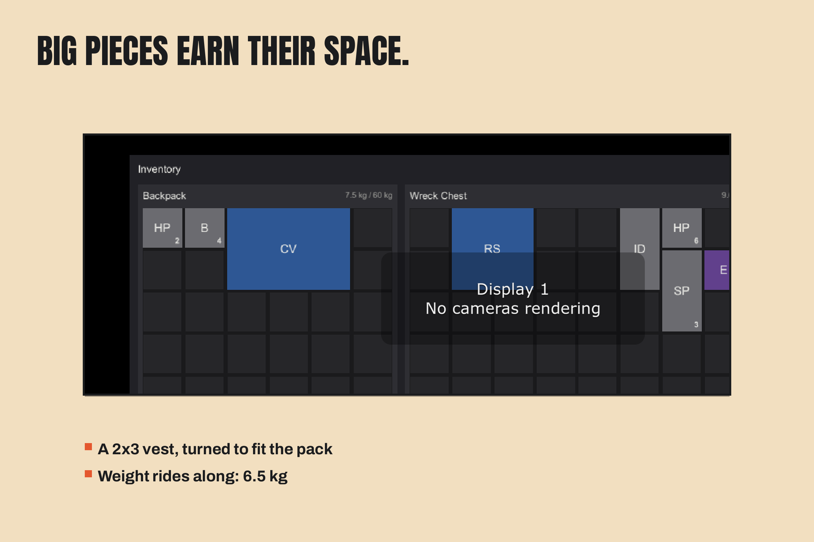
The big piece: the chain vest, a 2×3 item, dragged across the grid.
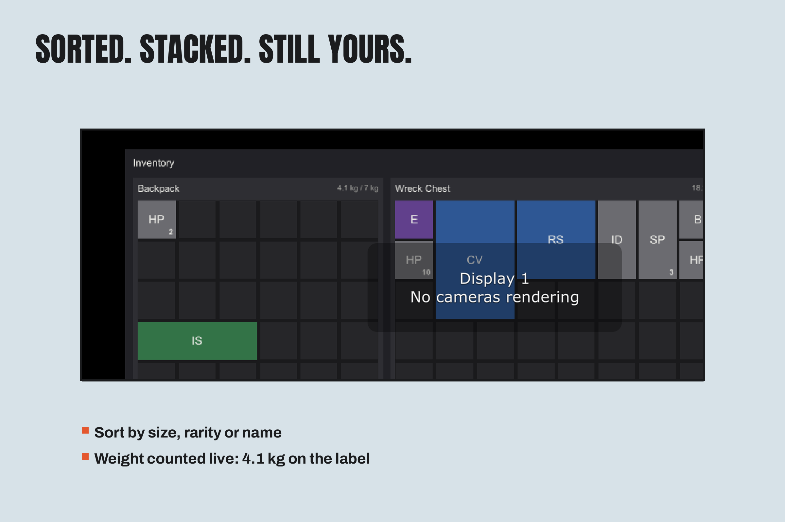
Sort and stack: the Wreck Chest re-laid out after sorting by rarity.
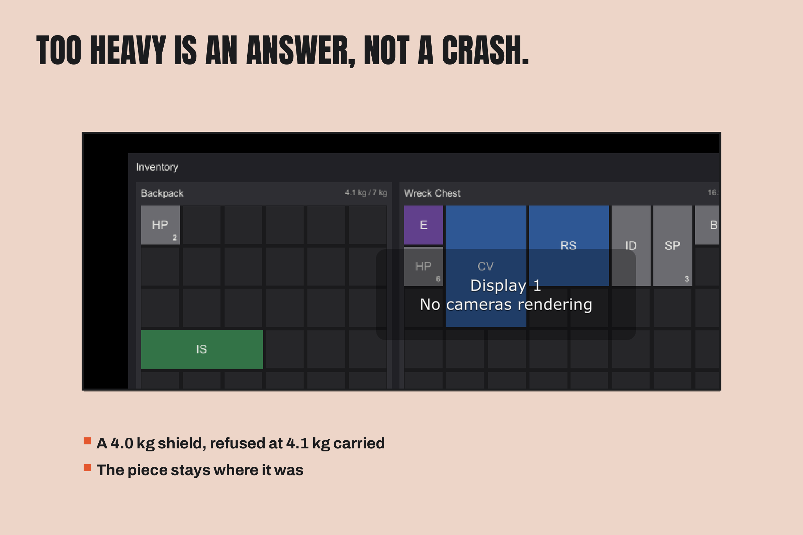
Too heavy is an answer, not a crash: the 4.0 kg shield stays in the chest at 4.1 kg of the 7 kg limit.
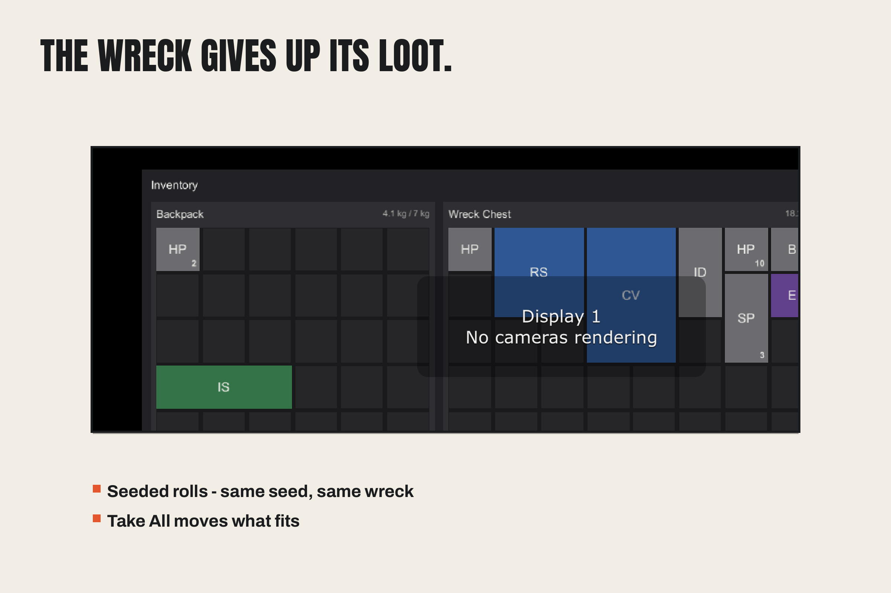
Loot the wreck: items moved from the Wreck Chest into the backpack grid.
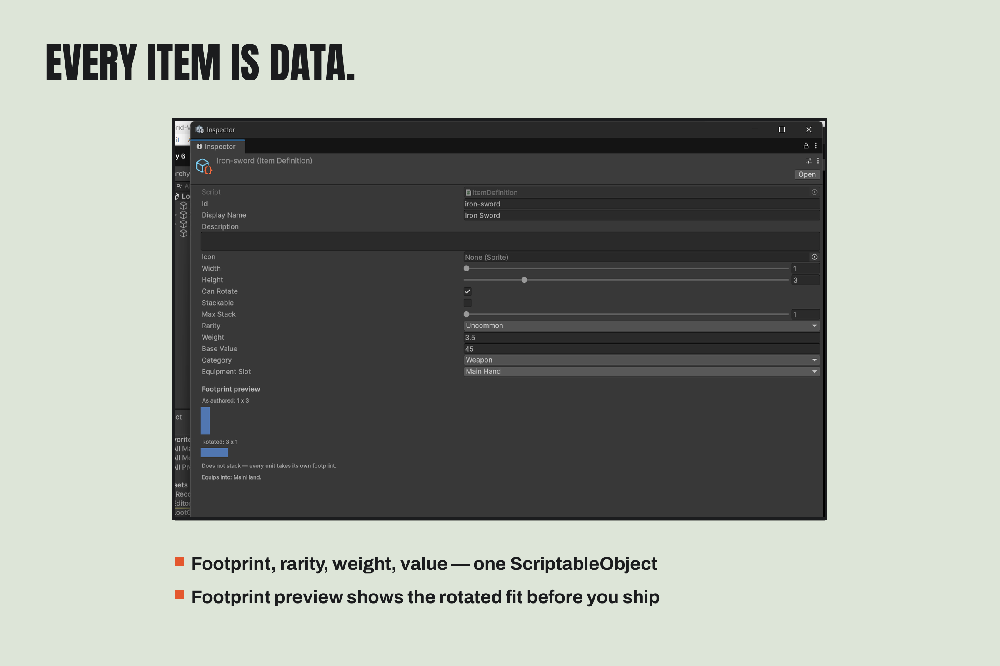
Item data: the Iron Sword definition — footprint 1×3, rarity, weight, value, footprint preview.
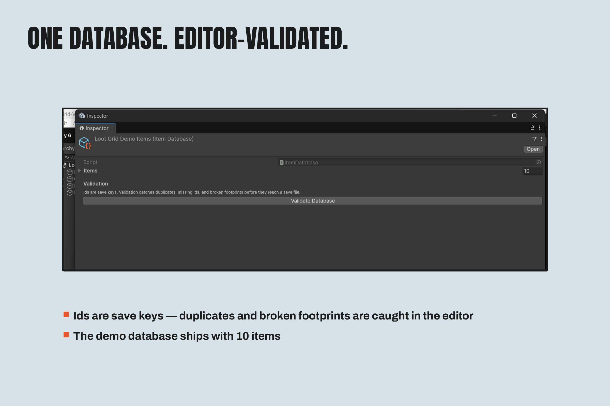
The database: the demo items in the Inspector, with editor validation.
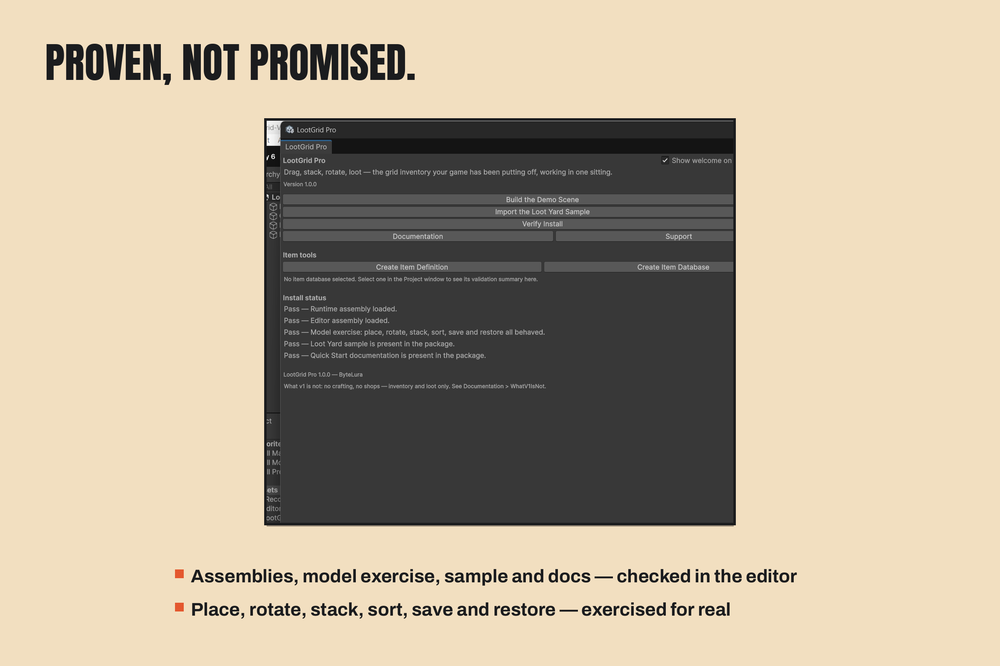
Verify Install: the welcome window with every install check reporting Pass.
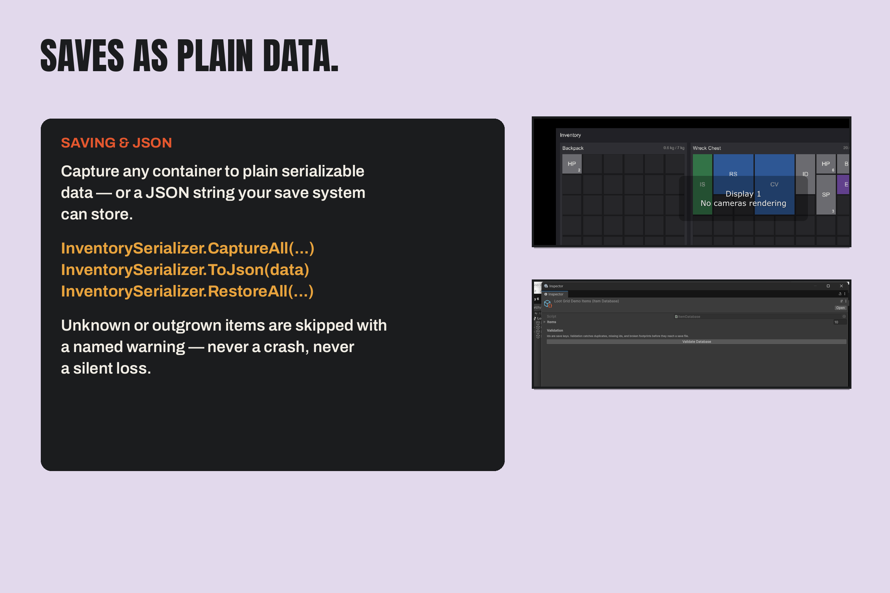
Saving and JSON: CaptureAll, ToJson and RestoreAll — the shipped save API.
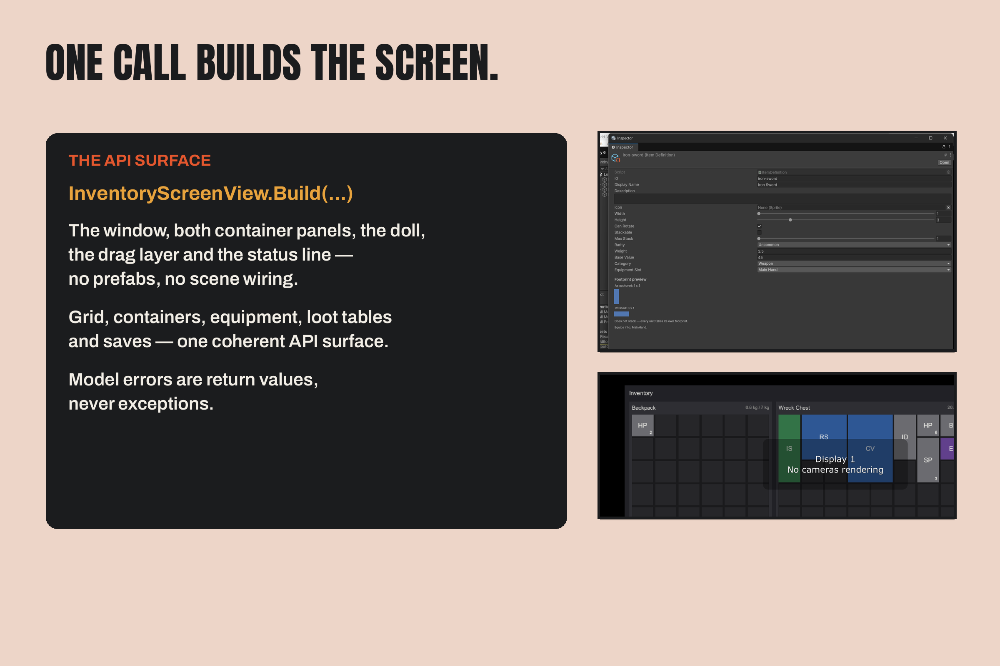
The API: the whole screen builds from one call, InventoryScreenView.Build(...).
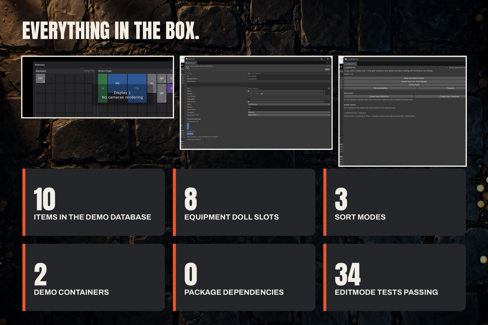
At a glance: 10 items, 8 doll slots, 3 sort modes, 2 demo containers, 0 dependencies, 34 EditMode tests.